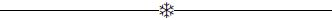

Acroceraunian tepeleri arasındaki evimde ayakta duruyordum ve gökyüzünde aralıklı olarak şimşekler çakıyor; vadilerin arasına yıldırımlar düşüyor; her yıldırımı zikzak şeklinde bir ışık huzmesi ve alçak padavra çatımda duyulabilecek biçimde tınlayan şiddetli yağmurun mızrak ucu taarruzu gibi hızla düşen damlaları takip ediyordu. Ne alışılmadık bir gök gürültüsü, diye düşündüm. Sanırım civardaki dağlar gök gürültüsünü parçalayarak dağıtıyor, bu yüzden burada düz arazide olduğundan daha görkemli duyuluyor. Dur! Kapıda biri var. Uğramak için gök gürültülü bir anı seçen bu kişi kim? Ve bu adam neden çıngırağı kullanmak yerine eski tahta kapıyı yumruklayarak kasvetli ölü kaldırıcısı gibi gürültü çıkartıyor. Yine de onu içeri alayım. Ah işte geliyor. “İyi günler, bayım.” Tamamen yabancı. “Girebilir miyim?” Elindeki şu garip görüntülü baston da neyin nesi? “Ne hoş bir sağanak yağmur, bayım.”
“Hoş mu? Berbat!”
“Islanmışsınız. Sobanın yanma buyurun.”
“Hayatta olmaz!”
Yabancı hâlâ, ilk konuşlandığı yerde, odanın tam ortasında ayakta duruyordu. Garipliği onu daha yakından incelemeye sevk etti beni. Cılız, mahzun bir tipti. Koyu renk ve düz saçları dolaşık bir halde kaşlarının üzerine dökülmüştü. Çökük göz çukurları morumsu halkalarla çevrelenmiş ve bakışlarında yıldırıma dönüşmeyen parıltılarla masum şimşekler çakıyordu. İliklerine kadar ıslanmıştı. Çıplak meşe döşemede oluşmuş bir gölette ayaktaydı; elinde garip bastonu ile dimdik duruyordu.
Bir metre uzunluğunda parlak, bakır kaplama bir bastondu bu; bakır halkalarla çevrili yeşilimsi camdan yapılmış iki yuvarlakla tutturulmuş, boylu boyunca uzanan muntazam ahşap bir sapı vardı. Metal baston, yukarıda, parlak yaldızlı üç keskin diş biçiminden dolayı üç ayaklı sehpaya benzer bir görüntüyle son buluyordu. Onu sadece ahşap kısmından tutuyordu.
Başımla kibarca selamlayarak, "Bayım, sanırım şanlı tanrı Jüpiter Tonans’ın ziyaretiyle onurlandırıldım.” dedim. “Elinde şimşekle, eski bir Yunan heykeli gibi karşımda duruyor. Eğer siz oysanız ya da onun vekili, dağların arasında patlayan bu soylu fırtına için size teşekkür etmeliyim. Dinleyin bakın: Çok görkemli gürlüyor. Ah, bir görkem hayranı için fakirhanesinde Fırtına’nın kendisini ağırlamak çok güzel bir şey. Bu yüzden fırtına daha da hoş bir hale geliyor. Ama lütfen oturun. Kabul ediyorum ki bu eski püskü hasır koltuk sizin Olimpos’taki ölümsüz tahtınızın yanında çok zavallı ama rica ediyorum oturmaya lütfedin.”
Ben böyle alaylı bir ifadeyle konuşurken yabancı yarı şaşkınlık, yarı ürkmüş bir ifadeyle gözlerini dikmiş bana bakıyordu; bir adım bile kımıldamadı.
Oturun bayım. Tekrar dışarı çıkmadan önce kurumanız gerek.”
Eylül başlari olduğundan dolayı soğuğu değil, rutubeti gidermek için, o öğleden sonra hafif hafif yanan geniş sobanın önündeki sandalyeye davetkâr bir edayla oturdum.
Ama yabancı davetime aldırmadan hâlâ odanın ortasında dikilmiş ters ters bana bakarak konuşmaya başladı.
“Bayım,” dedi. “Kusura bakmayın ama orada sobanın yanında oturma davetinizi kabul etmek yerine sizin bana ayak uydurarak, benimle birlikte odanın ortasında durmanız konusunda sizi ciddi biçimde uyarıyorum. Buraya gelin, Tanrı aşkına!” diye bağırdı. “İşte o korkunç gümbürtülerden biri daha. Sizi uyarıyorum, bayım sobadan uzak durun.”
Bedenimle sobaya doğru eğilerek, “Bay Jüpiter Tonans, dedim sakin bir tonla. “Ben burada iyiyim.”
“Bu kadar cahil misiniz?” diye bağırdı. “Görünen o ki böylesi korkunç bir fırtınada evin en tehlikeli yerinin soba yanı olduğunu bilmiyorsunuz.”
Bilinçsizce sobanın yanından bir adım uzaklaşarak “Hayır, bunu bilmiyordum,’’diye cevap verdim.
O an yabancı, ikazının başarısından memnun olarak öyle rahatsız edici bir havaya büründü ki düşünmeden tekrar sobaya yaklaştım ve takınabileceğim en dik, mağrur pozu takındım. Ve bir şey söylemedim.
Panik ve tehdit karışımı garip bir ifadeyle “Tanrı aşkına,” diye bağırdı. “Tanrı aşkına, sobadan uzaklaşın. Isınmış hava ve kurumun iletken olduğunu bilmiyor musunuz? Şu kocaman demir sobadan söz etmiyorum bile. Yalvarıyorum -hatta emrediyorum- uzaklaşın oradan.”
"Kendi evimde emir almaya alışık değilim, Bay Jüpiter Tonans.
“Bana şu pagan adıyla hitap etmeyin. Böylesi bir dehşet anında nasıl böyle saygısızlık yapıyorsunuz?”
“Bana mesleğinizi söyleme nezaketinizi gösterecek misiniz, bayım? Eğer fırtınada sığınacak bir yer arıyorsanız, uygar davrandığınız sürece başımın üstünde yeriniz var. Eğer iş için geldiyseniz bir an önce konuyu açın. Kimsiniz siz?”
“Paratoner satıcısıyım,” dedi yabancı tonunu yumuşatarak; “İşim özellikle... Aman Tanrım! Gördünüz mü nasıl çaktı! Size... yani evinize hiç yıldırım düştü mü? Hayır mı?” Anlamlı bir biçimde metal bastonunu zeminde tangırdatarak, "Bulundurmakta fayda var,” diye devam etti. “Çok sağlam görünseler de gök gürültülü sağanak yağışlarda kaleler bile işe yaramaz; ayrıca emredin bu asayı birkaç kez sallayarak bu kulübeyi Cebelitarık a dönüştüreyim. Dinleyin bakın; sanki Himalayalar sarsılıyor.”
“Konuyu değiştirdiniz. İşinizden söz ediyordunuz.”
“İşim paratoner siparişi almak için tüm ülkede seyahat etmek. Bu benim örnek çubuğum,” dedi bastonu yere vurarak. Sonra ceplerini karıştırarak, “Çok iyi referansım var,” diye devam etti. “Geçen ay Criggan’da sadece beş binaya yirmi üç paratoner taktım.”
“Durun bakalım. Cumartesi gece yarısı Criggan’da çan kulesine, karaağaca ve toplantı salonunun kubbesine yıldırım düşmemiş miydi? Paratonerlerinizden biri var mıydı orada?”
“Ağaçta ve kubbede yoktu ama çan kulesinde vardı.”
“O zaman sizin bu çubuklarınız ne işe yarıyor?”
“Yaşam ve ölümü ayırmaya. Ama işçim dikkatsizlik yapmış. Çubuğu kubbenin tepesine koyarken metalin ucu saç kaplamaya değmiş. Yani kaza. Benim değil, onun hatası. Anladınız mı?”
“Boş verin. Kimseyi suçlamaya gerek yok. Geçen sene Montreal’de olan olayı duydunuz mu? Elinde metal boncuklu bir tespihle yatağının yanında duran hizmetçi kızı yıldırım çarpmıştı. Sihirli değneğiniz Kanada’ya kadar uzanıyor mu?”
“Hayır. Orada sadece demir çubukların kullanıldığını duydum. Oysa benimkini, yani bakır olanı, kullanmaları gerekir. Demir kolay erir. Ayrıca çubuğu o kadar ince koyuyorlar ki tüm elektrik akımını iletmek için yeterli olmuyor. Metal eriyor ve bina harap oluyor. Benim bakır çubuğum asla böyle çalışmaz. Kanadalılar aptal. Bazıları, bu tür çubuğun yaptığı gibi akımı toprağa vermektense çubuğu tepede bırakıyorlar ki bu ölümcül bir yıldırım düşme riski oluşturur. Benimki gerçek çubuk. Bakın şuna. Yarım metresi sadece bir dolar.”
“Birinin evine kendi kendinizi davet ettirmenizi suiistimal etmek sizin açınızdan güvensizlik oluşturabilir.”
“Duyuyor musunuz? Gök gürültüsünün homurtusu azaldı. Hem buraya hem de yeryüzüne yaklaşıyor. Dinleyin bakın! Dolu dolu bir gürleme daha. O kadar yakın ki hepsi tekbir seste birleşmiş gibi. Bir şimşek daha. Tutun!”
Aniden bastonunu bırakıp, sağ elinin işaret ve orta parmaklarıyla sol bileğinin üzerine koyarak pencereye doğru eğildiğini görünce “Siz ne...” dedi. Ama cümlemi bitirmeden bir kez daha haykırdı.
“Gök gürültüsü! Sadece üç uğultu; bir-iki kilometre uzakta; orada ormanda bir yerlerde... Yıldırım çarpmış üç meşe ağacının yanından geçtim. Görülmemiş bir biçimde çığlık atıyor ve parıldıyorlardı. Meşe, özsuyunda demir olduğundan yıldırımı diğer bütün ağaçlardan daha çok çeker. Sizin yer döşemeniz de meşe sanırım.”
“Has meşe. Beni ziyaret ettiğiniz zamanın tuhaflığına bakarak seyahatlerinizi için özellikle fırtınalı havayı seçtiğinizi düşünüyorum. Satış yapmanızı sağlayacak lehte etkiyi yaratmak için özellikle fırtınanın uğuldadığı saatleri dikkate alıyorsunuz.
“Duyuyor musunuz? Korkunç!”
“Diğer kişileri korkutan biri olarak kendiniz oldukça ürkek görünüyorsunuz. Normal insanlar seyahat için iyi havayı seçerler; siz ise fırtınalı havayı seçiyorsunuz. Yine de...”
“Fırtınalı havada seyahat ettiğim görüşünüze katılıyorum ama belli tedbirleri alarak; örneğin herkesin bilebileceği sıradan bir paratoner ile. Dinleyin! Hemen örnek çubuğuma bir göz atın. Yarım metresi sadece bir dolar.”
“Herhalde çok iyi bir çubuktur. Ama şu özel tedbirlerinizin ne olduğunu merak ettim? Önce izin verin şu panjurları kapatayım. Yağmur yan yağdığı için pencere pervazlarına çarpıyor. Panjurları sürgüleyeyim.”
“Aklınızı mı kaçırdınız? O demir sürgülerin en süratli iletken olduğunu bilmiyor musunuz? Bırakın hemen.”
“Sadece panjurları kapatacağım. Sonra yardımcıma ahşap bir çubuk getirmesini söyleyeceğim.” Rica etsem oradaki çanı çalar mısınız?”
“Çıldırdınız mı? Çan sizi havaya uçurabilir. Fırtınalı havada sakın çana dokunmayın; ya da herhangi bir zil çalmayın.”
“Çan kulelerindekileri de mi? Rica etsem böyle bir havada birinin nerede ve nasıl güvende olabileceğini söyler misiniz? Evimde hayatta kalabilirim umuduyla dokunabileceğim bir yer var mı?”
“Var, ama şu an durduğunuz yerde değil. Duvardan uzaklaşın. Akım bazen duvardan geçer ve insan duvardan daha iyi bir iletken olduğu için duvarı bırakıp o kişiye kayar. Gene düştü! Çok yakına düşmüş olmalı. Kesinlikle küresel yıldırımdı.”
“Büyük olasılıkla. Şimdi sizce bu evin en güvenli yeri neresi?”
“Bu oda ve bu odadaki ben durmakta olduğum nokta. Buraya gelin.”
“Önce sebepler.”
“Dinleyin! -Şimşekten sonraki rüzgârı duyuyor musunuz? Çerçeveler, hatta ev zangırdıyor ev!- Benim yanıma gelin!”
“Önce sebepler, lütfen.”
“Benim yanıma gelin!”
“Tekrar teşekkür ederim. Sanırım eski yerimde, sobanın yanında duracağım. Şimdi, Bay Paratoner satıcısı, hazır fırtına durmuşken, evdeki en güvenli yerin bu oda ve durduğunuz yerin en güvenli nokta olduğunu varsaymanıza neden olan sebepleri söylemeyi lütfeder misiniz?”
Fırtına biraz ara vermişti. Paratoner satıcısı rahatlamış görünüyordu. Cevap verdi...
“Eviniz tek katlı; bir çatı katı bir de bodrum var. Bu oda ikisinin arasında. Bu yüzden diğerlerine göre daha güvenli. Çünkü şimşek bazen bulutlardan yeryüzüne iner; bazen de yeryüzünden bulutlara çıkar. Anladınız mı? Ve ben odanın ortasını seçtim, çünkü yıldırım eve düşerse, ya duvarlardan ya da bacadan geçer. Bu yüzden, onlardan ne kadar uzak durursanız o kadar iyidir. Şimdi yanıma gelin.”
“Birazdan. Söylediğiniz bir şey beni korkutmak yerine garip bir biçimde güven uyandırdı.”
“Ne söyledim?”
“Şimşeğin bazen yeryüzünden bulutlara doğru hareket ettiğini söylediniz.”
“Evet. “Geri boşalım” diye adlandırılır. Yeryüzü aşırı miktarda sıvıyla dolunca, şimşekler fazlalıkları yukarı doğru gönderirler.”
“Geri boşalım, yani yeryüzünden gökyüzüne. Daha da iyi. Şimdi sobanın yanma gelin ve kuruyun.”
“Burada daha iyiyim. Islak olmak daha iyi.”
“Nasıl?”
“Sağanak yağışlı ve fırtınalı bir havada yapabileceğiniz en güvenli şey -Bir tane daha; duydunuz mu?- ıslanmaktır. Islak giysiler vücuttan daha iyi iletkenlerdir. Bu yüzden, eğer şimşek çakarsa vücuda hiç dokunmadan ıslak giysilerden geçip gider. Fırtına tekrar artıyor. Evde bir battaniyeniz var mı? Battaniyeler yalıtkandır. Getirirseniz burada onun üzerinde durabilirim. Tabii siz de. Gökyüzü kararıyor loş bir gün. Duydunuz mu? Battaniye dedim. Battaniye!”
Bir tane verdim. Bulutlarla kaplı tepeler yaklaşmış görünüyorlardı; evin içinde gibiydiler.
“Şu an susmanın bize bir faydası olmayacağına göre sağanak yağmur ve fırtınada seyahat ederken aldığınız tedbirleri anlatın.”
“Bu geçene kadar bekleyin.”
“Hayır. Tedbirleri anlatmaya başlayın. Kendi hesabınıza göre mümkün olan en güvenli yerde duruyorsunuz. Devam edin.”
“Kısaca anlatmak gerekirse çam ağaçları, yüksek binalar, tenha ahırlar, yüksek yaylalar, akan sular, sığır ve koyun sürüleri, insan kalabalığından uzak duruyorum. Eğer, bugünkü gibi, yürüyerek dolaşıyorsam, hızlı yürümüyorum. Eğer arabamla seyahat ediyorsam arkasına ya da yanlarına dokunmuyorum. Eğer at sırtındaysam iniyor ve atın önünden yürüyorum. Ama hepsinden öte uzun boylu adamlardan uzak duruyorum.”
“Doğru mu duyuyorum? İnsanlardan uzak duran bir adam mı? Hem de tehlikeli anlarda, öyle mi?”
“Uzak durduğum uzun boylu insanlardaki sağanak yağış ve fırtına. l.85’likbir adamın paratoner gibi yıldırım çekebileceğini bilmeyecek kadar kör cahil misiniz? Sadece siz, Kentuckyliler mi bile bile lades diyorsunuz sanki bu dünyada? Hayır. Eğer bir seksenden uzun bir adam akan suyun yanında duruyorsa, bulut elektriğini akan suya iletmek için bazen onu seçebilir. Duyuyor musunuz? Şuradaki tepe kesin yarıldı. Evet, insan iyi bir iletkendir. Şimşek bir insandan geçebilir ama sadece bir ağacın kabuğunu soyar. Sorunuzu cevaplamak için beni o kadar oyaladınız ki bayım, hâlâ iş konusuna gelemedim. Çubuklarımdan sipariş verecek misiniz? Şu örnek çubuğu görüyor musunuz? Bakın, en iyi kalite bakır. Bakır en iyi iletkendir. Eviniz alçak; ama dağların eteğinde olduğu için alçak olması tehlikeyi bir parça bile azaltmıyor. Siz dağdakiler daha korunmasızsınız. Bu kadar küçük bir ev için tek bir çubuk yeterli olacaktır. Şu tavsiye mektuplarına bir göz atın. Yalnız bir çubuk bayım; sadece yirmi dolara mal olur. Dinleyin! Bu fırtına sağlam Tacnonic ve Hoosic Dağlarını bile çakıltaşları gibi savurur. Sesten anlaşıldığına göre bir yere yıldırım düşmüş olmalı. Evin üzerindeki bir buçuk metrelik bir yükseklik, çubuğun altı metreyi korumasını sağlar. Sadece yirmi dolar, bayım; yarım metresi bir dolar. -Duyuyor musunuz? Korkunç!- Sipariş verecek misiniz? Satın alacak mısınız? Adınızı yazayım mı? Yangında ahırda bağlı kalıp yanarak kül olmuş bir at gibi olduğunuzu düşünün; hem de sadece tek bir yıldırımla.”
“Jüpiter Tonans’ın elçisi gibi davranıyorsunuz,” dedim gülerek. "Oysa sadece toprakla gökyüzü arasına bir çubuk koymak için buraya gelen birisiniz. Leyden şişesinden bir parça yeşil ışık çıkarabiliyorsunuz diye Tanrısal büyüklükteki şimşekleri tamamen engelleyebileceğinizi mi düşünüyorsunuz? Çubuğunuz paslandı; kırıldı. Sizi nereden bulacağım? Tetzel1 gibi kapı kapı dolaşarak tanrısal kutsamalarla günah çıkartma yetkisini size kim veriyor? Başımızdaki saçlar sayılırdır; yaşayacağımız günler de. Güneşte olduğu gibi fırtınada da Tanrıma sığınırım. Sahte delege, uzaklaş! Bakın, fırtına hafifledi; evde bir hasar yok ve mavi cennetteki gökkuşağında Tanrının insan topraklarında kasten savaş çıkartmayacağını görüyorum.”
Yabancı, ışıldayan gökkuşağına rağmen yüzü karararak, öfkeyle “Zavallı kâfir,” dedi. “Bu imansız düşünceni herkese yayacağım.”
Bakışları daha da karardı; gözlerinin etrafındaki morumsu halkalar, aynı gece yarısı ayının etrafında fırtınanın oluşturduğu hareler gibi, çoğalmıştı. Üç çatallı şeyini kalbime dayayarak üzerime yürüdü.
Onu yakaladım; kaptım; yere attım; üstüne bastım ve kasvetli paratoner kralını tutup kapı dışarı ettim. Eğilmiş bakır asasını arkasından fırlattım.
Ancak, bu davranışıma ve komşularımla yaptığım onunla ilgili caydırıcı konuşmalara rağmen, paratoner satıcısı hâlâ buralarda yaşıyor; hâlâ fırtınalı havada seyahat ediyor ve insanların korkularını kullanarak cesur bir biçimde işini yürütüyor.

1 Kapı kapı dolaşarak günah çıkartan Dominikli bir papaz, (ç.n.)